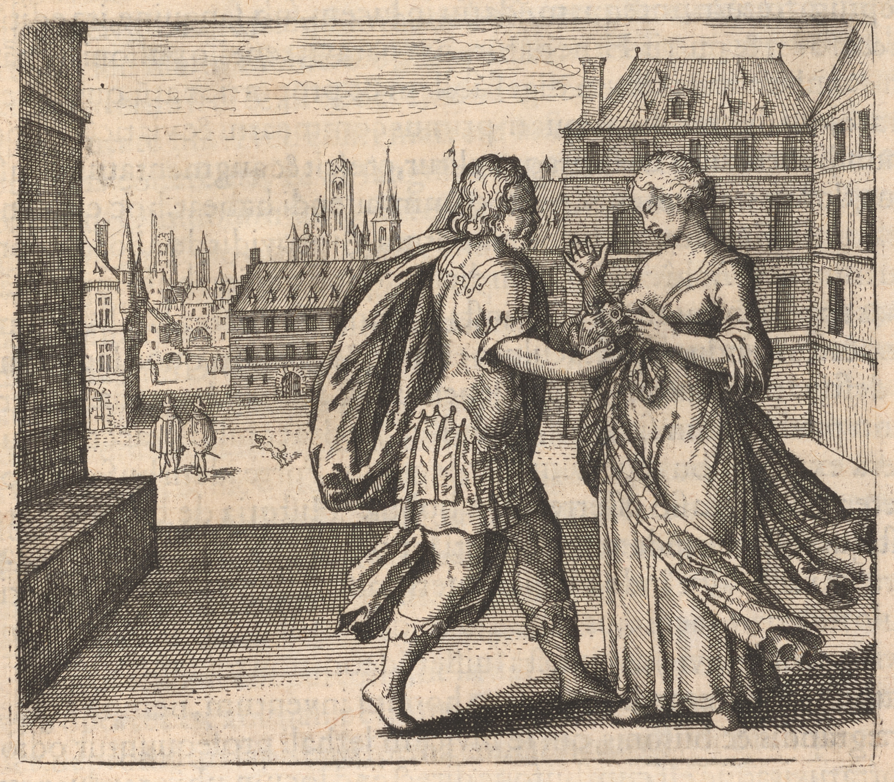

029
Embleme Emblem 5. Of the Secrets of Nature.
Put a Toad upontothe womans breasts, that shee she may give it sucke suck,
and the woman dye die herselfe herself, and the Toad be grosse grossgrow fatt fat with milke milk.
Emblema V.De secretis Naturae.
Appone mulieri super mammas bufonem, ut ablactet eum,
& moriatur mulier, sitq́ue bufo grossus de lacte.
FUGA V. in Quinta, supra.
Selz dem Weib die Kröte auff di Brüst / daß sie sauge /
und das Weib sterbe / so wirt die Kröte von Milch sehr groß.

Epigramme Epigram 5.
Lay the cold Toad to th' the womans milky breast,
That as an infant hee he himselfe himself may feast,
And thereby grow in bignesse bigness and in strength,
Till hee he hath has killd killed his dry=suckd sucked nurce nurse at length:
An antidote, from thence them præpared prepared, the heart
Intoxicated cures, and Pocks, with art.
Epigramma V.
Foemineo gelidus ponatur pectore Bufo,
Instar ut infantis lactea pocla bibat.
Crescat & in magnum vacuata per ubera tuber,
Et mulier vitam liquerit æaegra suam.
Inde tibi facies medicamen nobile, virus
Quod fuget humano corde, levétque luem.
V. Epigrammatis Latini versio Germanica.
Ein Kröte baid dem Webe sely auff die Brüste geschwinde /
Daß sie solche ernehr mit Milch / gleich einem Kinde
Und wachse, auff in grosser Gestalt durch auß gesogner Speiß/
Und das Weib sich röthlich erzeig in aller Weiß/
Denn mach hir ab ein Arzneii / so seii solcher edlen Kräfften /
Daß sie lasse kein Gifft an deß Menschen Herz hafften.
030
e05-01The whole troop of the Philosophers doe do herein consent, that their worke work is
nothing els else, but man and wife: the mans part is indeed to generate, and governe govern
the wife, hers to conceive, be imprægnated impregnated, bring forth, give sucke suck, and educate
the offspring, and be subject to the mans coḿand command: e05-02for as Shee She sustaines sustains and
nourisheth nourishes the conceived Embryo, before it be brought to light, with blood, soe so
being brought forth with milke milk. e05-03To this end Nature hath has præpared prepared for the
tender infant a digestible and proportioned food in the mothers breasts, which
waits his coming, as the first provision and viaticum in this race of the world:
e05-04by milke milk therefore hee he is nourished, growes grows, and is increased, till hee he be furnished
with instruments to chaw bread, that is, teeth, then is hee he deservedly weaned, be=
cause nature hath has provided him other nutriment more solid: e05-05But here the Phi=
losophers say, that a Toad must be put to the womans breasts, that Shee She may
nourish it, as an infant, with her milke milk: e05-06This is a miserable and horrible spectacle,
yea and a wicked thing, that milke milk designed for an infant Should be given to a
Toad, being a venomous beast, and contrary to the nature of man: e05-07Wee We have
heard and read of Serpents and Dragons sucking the teats of Cowes Cows: Toads might
perhaps desire the same thing, if occasion Should be offered in beasts. e05-08There is a
noted story of a Toad, who seated himselfe himself upon the mouth, and inside of the
lipps lips of a certaine certain countryman being asleep, soe so that hee he could not be driven of off
by any contrivance, unlesse unless by violence, which being accompanyd accompanied with danger of
death, by the spitting of poyson poison (which hee he is sayd said to use for defensive or offensive
weapons) was therefore not to be attempted; e05-09but a remedy being found for the
miserable man by antipathy, namely, of a very great Spider and the Toad,
who hate one another mortally, e05-10hee he was therefore carryd carried with the Toad di=
rectly to the place, where an overcomegrowne grown Spider had made its webs, which
seing seeing the Toad, præsently presently came downe down upon the backe back of the Toad, and
prickd pricked him with its sting: e05-11but hee he having received noe no harme harm thereby, it
descended a second time, and strucke struck him againe again more strongly, where=
upon the Toad began iḿediately immediately to swell, and fell downe down dead from the
mans mouth, without any hurt to him. e05-12But here a thing contrary happens, be=
cause the Toad seizeth seizes not the mouth but the breast of the woman, by whose milke milk hee he
increaseth increases soe so as to be of great magnitude and strength, e05-13but the woman consumes
and dyes dies her spirits being taken away: for poyson poison is easily coḿunicated communicated by the
Discourse 5.
e05-01The whole troop of the Philosophers doe do herein consent, that their worke work is
nothing els else, but man and wife: the mans part is indeed to generate, and governe govern
the wife, hers to conceive, be imprægnated impregnated, bring forth, give sucke suck, and educate
the offspring, and be subject to the mans coḿand command: e05-02for as Shee She sustaines sustains and
nourisheth nourishes the conceived Embryo, before it be brought to light, with blood, soe so
being brought forth with milke milk. e05-03To this end Nature hath has præpared prepared for the
tender infant a digestible and proportioned food in the mothers breasts, which
waits his coming, as the first provision and viaticum in this race of the world:
e05-04by milke milk therefore hee he is nourished, growes grows, and is increased, till hee he be furnished
with instruments to chaw bread, that is, teeth, then is hee he deservedly weaned, be=
cause nature hath has provided him other nutriment more solid: e05-05But here the Phi=
losophers say, that a Toad must be put to the womans breasts, that Shee She may
nourish it, as an infant, with her milke milk: e05-06This is a miserable and horrible spectacle,
yea and a wicked thing, that milke milk designed for an infant Should be given to a
Toad, being a venomous beast, and contrary to the nature of man: e05-07Wee We have
heard and read of Serpents and Dragons sucking the teats of Cowes Cows: Toads might
perhaps desire the same thing, if occasion Should be offered in beasts. e05-08There is a
noted story of a Toad, who seated himselfe himself upon the mouth, and inside of the
lipps lips of a certaine certain countryman being asleep, soe so that hee he could not be driven of off
by any contrivance, unlesse unless by violence, which being accompanyd accompanied with danger of
death, by the spitting of poyson poison (which hee he is sayd said to use for defensive or offensive
weapons) was therefore not to be attempted; e05-09but a remedy being found for the
miserable man by antipathy, namely, of a very great Spider and the Toad,
who hate one another mortally, e05-10hee he was therefore carryd carried with the Toad di=
rectly to the place, where an overcomegrowne grown Spider had made its webs, which
seing seeing the Toad, præsently presently came downe down upon the backe back of the Toad, and
prickd pricked him with its sting: e05-11but hee he having received noe no harme harm thereby, it
descended a second time, and strucke struck him againe again more strongly, where=
upon the Toad began iḿediately immediately to swell, and fell downe down dead from the
mans mouth, without any hurt to him. e05-12But here a thing contrary happens, be=
cause the Toad seizeth seizes not the mouth but the breast of the woman, by whose milke milk hee he
increaseth increases soe so as to be of great magnitude and strength, e05-13but the woman consumes
and dyes dies her spirits being taken away: for poyson poison is easily coḿunicated communicated by the
031pec=
torall pectoral veins to the heart, and corrupts and destroyes destroys it, as it is evident in the case of
Cleopatra, who applyed applied Vipers to her breasts, being willing to be prævented prevented by vo*
luntary death from being led alive into the hands and triumphs of the con=
querours conquerors: e05-14But lest any man should thinke think the Philosophers soe so cruell cruel, as to en=
joyne enjoin a venomous reptile to be put to a woman, hee he must know that this Toad
is the offspring or Sonne Son of the same woman, produced by a monstrous birth,
and therefore by naturall natural right ought to be fed and nourished by the mothers
milke milk, but it is not in the will of the Sonne Son that the mother should dye die: e05-15for
neither could hee he infect his mother, who was coagulated in her bowells bowels, and
increased by blood even to birth. e05-16It is indeed a thing ominous for a Toad
to be borne born of a woman, which in our knowledge hath has happened elswhere elsewhere: 22Discourse 5.
Guilielmus Novobrigensis, an English writer, in his coḿentaryes commentaries sayth says (how
truely truly let others judge) that in a certaine certain Stonequarry in the Diocesse of the
Bishop of Winchester, a great stone being divided, there was within found a living
Toad with a golden chaine chain, and it was by the Bishops coḿand command hidden in the
same place, and buryd buried in perpetuall perpetual darknesse darkness, lest it might bear an ill omen
with it: e05-17Such is allso also this Toad: for it is apparelled appareled with gold, though not extrin=
secally extrinsically, with the artificiall artificial worke work of a chaine chain, yet intrisecally intrinsically with a naturall natural,
namely of a Stone, which some call Borax, Chelonitis, Batrachites, Crapaudina,
or Garatronium: e05-18for this farre far excells excels gold in virtue against all poysons poisons whatsoe=
ver of animalls animals, and is coḿonly commonly sett set in gold, as a case or cover, that it may
not be hurt or lost. e05-19But it ought to be legitimate being had out of theananimall animal, but if
it be pickd picked out of subterranean trenches, as coḿonly commonly it is, the Stone taken up
may be made neat in the forme form of it, and used instead thereof with the best
mineralls minerals, releiving relieving and comforting the heart: e05-20for here in theseis the Philosophicall Philosophical
Toad is indeedreally found, not in a Stonequarry (as that fabler affirms) and hath has
gold in him, not outwardly for pompe pomp: for to what end should a Toad adorne adorn
himselfe himself, lurking in darkenesse darkness and secret places? e05-21that hee he might perhaps
be magnificently saluted by a Beetle, if it mett met him in the twylight twilight? e05-22what
subterranean Goldsmith should make him a golden chayne chain? the father
perhaps of the green boyes boys, which came out of the land of St Martin, yea
out of the earth itselfe itself, as allso also two doggs dogs out of the Stonequarry, asserted
by the same Author? . . . . . . . . . . .
torall pectoral veins to the heart, and corrupts and destroyes destroys it, as it is evident in the case of
Cleopatra, who applyed applied Vipers to her breasts, being willing to be prævented prevented by vo*
*Theophilus in
Turba makes men=
tion of a Dragon
joynd joined to a woman.-
=Turba makes men=
tion of a Dragon
joynd joined to a woman.-
luntary death from being led alive into the hands and triumphs of the con=
querours conquerors: e05-14But lest any man should thinke think the Philosophers soe so cruell cruel, as to en=
joyne enjoin a venomous reptile to be put to a woman, hee he must know that this Toad
is the offspring or Sonne Son of the same woman, produced by a monstrous birth,
and therefore by naturall natural right ought to be fed and nourished by the mothers
milke milk, but it is not in the will of the Sonne Son that the mother should dye die: e05-15for
neither could hee he infect his mother, who was coagulated in her bowells bowels, and
increased by blood even to birth. e05-16It is indeed a thing ominous for a Toad
to be borne born of a woman, which in our knowledge hath has happened elswhere elsewhere: 22Discourse 5.
Guilielmus Novobrigensis, an English writer, in his coḿentaryes commentaries sayth says (how
truely truly let others judge) that in a certaine certain Stonequarry in the Diocesse of the
Bishop of Winchester, a great stone being divided, there was within found a living
Toad with a golden chaine chain, and it was by the Bishops coḿand command hidden in the
same place, and buryd buried in perpetuall perpetual darknesse darkness, lest it might bear an ill omen
with it: e05-17Such is allso also this Toad: for it is apparelled appareled with gold, though not extrin=
secally extrinsically, with the artificiall artificial worke work of a chaine chain, yet intrisecally intrinsically with a naturall natural,
namely of a Stone, which some call Borax, Chelonitis, Batrachites, Crapaudina,
or Garatronium: e05-18for this farre far excells excels gold in virtue against all poysons poisons whatsoe=
ver of animalls animals, and is coḿonly commonly sett set in gold, as a case or cover, that it may
not be hurt or lost. e05-19But it ought to be legitimate being had out of theananimall animal, but if
it be pickd picked out of subterranean trenches, as coḿonly commonly it is, the Stone taken up
may be made neat in the forme form of it, and used instead thereof with the best
mineralls minerals, releiving relieving and comforting the heart: e05-20for here in theseis the Philosophicall Philosophical
Toad is indeedreally found, not in a Stonequarry (as that fabler affirms) and hath has
gold in him, not outwardly for pompe pomp: for to what end should a Toad adorne adorn
himselfe himself, lurking in darkenesse darkness and secret places? e05-21that hee he might perhaps
be magnificently saluted by a Beetle, if it mett met him in the twylight twilight? e05-22what
subterranean Goldsmith should make him a golden chayne chain? the father
perhaps of the green boyes boys, which came out of the land of St Martin, yea
out of the earth itselfe itself, as allso also two doggs dogs out of the Stonequarry, asserted
by the same Author? . . . . . . . . . . .
DISCURSUS V.
e05-01Tota Philosophorum congregatio in hoc consentit, quod opus
eorum nihil aliud sit, quàm mas & fœoemina: Maris verò est, ge-
nerare & dominari fœoeminæae; hujus concipere, impræaegnari, parere,
lactare & educare sobolem, marí q;marique imperio subjici: e05-02Ut enim con-
ceptum fœoetum, antequam edatur in lucem, sub sanguine, ita editũeditum
lacte fovet & nutrit. e05-03Hinc natura præaeparavit tenello pusioni in mã-
mismam-
mis muliebribus cibum digestibilem & proportionatũproportionatum, qui expe
ctat ejus adventum, tanquam primus commeatus & viaticũviaticum in hoc
mundi curriculo: e05-04 Lacte itaque alitur, crescit & augmentatur eò us
que, donec instrumenta panis comminuendi habeat, hoc est, den-
tes, tum ablactatur meritò, quia natura illi providit de alio solidiori
nutrimento. e05-05 At hîc Philosophi dicunt, quod mulieri bufo super mã-
masmam-
mas apponendus sit, ut eum instar infantis suo lacte alat: e05-06 Miserum
hoc & horrendum spectaculum est, imò & impium, quod lac infan-
ti destinatum bufoni, bestiæae venenosæae & naturæae humanæae adver-
santi præaebendum sit: e05-07 De serpentibus ac draconibus vaccarum u-
bera exiccantibus audivimus & legimus: Fortè idem bufones ap-
peterent, si occasio offerretur in bobus. e05-08 Historia de bufone nota
est, qui rustico cuidam dormienti ita occupavit os & interiora la-
bra, ut nullo astu inde abigi potuerit, nisi violentiâ, quæae cum peri-
culo mortis, veneni ejus expuitione (quâ ut dicitur pro telis defen-
sivis aut offensivis) conjuncta fuisset, ideóq;ideoque non tentanda: e05-9 Ex anti-
pathia itaque remedium misero homini inventum, nempe aranei
præaegrandis & bufonis, qui se invicem lethali prosequuntur odio:
e05-10 Portatus itaque est cum bufone directè ad locum, ubi araneus præae-
tumidus suas texturas exposuerat, qui cùm bufonem vidit, mox se
dimisit in tergum bufonis, eumq́ue suo aculeo pupugit: e05-11 Cùm verò
nihil inde damni acciperet, secunda vice descendit, & iterùm illum
fortiùs fixit; Unde mox bufo intumuit, & ex hominis ore mortuus
decidit, absque ulla ejus noxa. e05-12 Sed hîc contrarium accidit: quis bu-
fo non os, sed mammam mulieris occupat, cujus lacte adeò incre-
scit, ut ingentis magnitudinis & roboris evadat: e05-13 Mulier verò viri-
bus absumptis extabescat & moriatur: Venenum enim facilè per
DISCURSUS V.
venas pectorales communicatur cordi, idq́ue inficit & extinguit,
*
Theophilus
in turba
meminit
draconis
mulieri
juncti.
Theophilus
in turba
meminit
draconis
mulieri
juncti.
quemadmodum ex Cleopatræae casu constat, quæae viperas mammis
admovit, cùm voluntariâ morte præaeveniri voluerit, ne viva in vi-
ctorum manus ac triumphos traheretur. e05-14 Verùm ne quis Philo-
sophos adeò crudeles existimet, quasi mulieri venenosum reptile
admoveri jubeant, sciendum hunc bufonem esse ejusdem fœoeminæae
fœoetum seu filium, monstroso partu editum, ideóque jure naturali,
lacte materno frui & ali debere, quod verò mater moriatur, non est
in voluntate filii: e05-15 Nec enim matre inficere potuit, qui in visceri-
bus ejus concretus, & ex sanguine augmentatus fuerat usque ad
partum. e05-16 Ominosum sanè quid est, bufonem ex muliere nasci, quod
aliàs contigisse novimus: Guilielmus Novobrigensis, Anglicus scri-
ptor, in suis commentariis scribit (quàm fideliter, alii judicent) in
lapicidina quadam ditionis Vintoniensis Episcopi, cùm lapis qui-
dam magnus divideretur, intùs inventum bufonem vivum cum
aurea cathena, eúmque ex Episcopi jussu eodem loci reconditum
& perpetuis tenebris immersum, ne quid mali ominis secum porta-
ret: e05-17 Talis est & hic bufo: Auro enim insignis est, etiamsi non extrin-
secùs, artificiali cathenæae opere, tamen intrinsecùs naturali, nempe
lapidis, quem alii Boracem, Chelonitin, Batrachiten, Crapaudi-
nam aut garatronium vocant. e05-18 Hic enim auro longè præaevalet vir-
tute contra venena quæaecunque animalium, & auro inferi solet, tan-
quam thecæae aut coopertorio, ne læaedatur aut perdantur. e05-19 At legitimũlegitimum
esse oportet ex animali petitum, si verò ex subterraneis fossis, ut so-
let, depromptus lapis ejus formâ concinnetur, & vice usurpetur, ex
optimis mineris, cordi subvenientibus, eligatur: e05-20 In his enim bufo
Philosophicus reverà invenitur, non in lapicidina (ut ille fabulator
asserit) aurúmque in se habet, non extra ad pompam: Ad quid enim
se ornaret bufo in tenebris & claustris delitescens? e05-21 Forte ut à scara-
bæaeo magnificè salutaretur, si in crepusculo illi obvius incederet?
e05-22 Quis aurifaber subterraneus fabricasset illi auream cathenãcathenam? Fortè
viridium puerorum pater, qui ex terra S.Sancti Martini, imò ex ipsa terra,
ut & duo canes ex lapicidina, eodem authore, prodierunt?